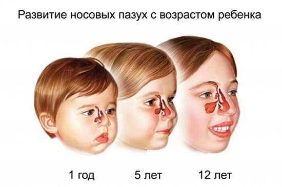
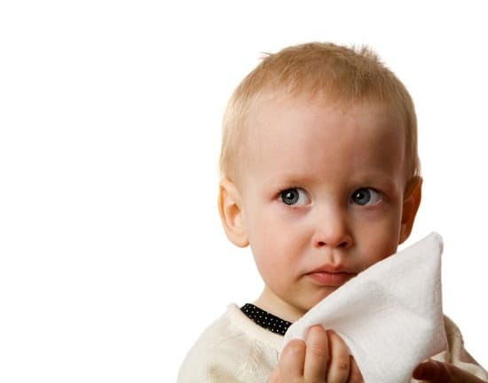

ИНФЕКЦИИ НОСОВЫХ ПАЗУХ

Инфекции пазух, как правило, не встречаются у младенцев и малышей до 3 лет, поскольку пустоты в костях вокруг носа и глаз развиваются у детей, только когда им исполнится несколько лет. Тем не менее это частая проблема у детей и взрослых. Ниже описано, как вы можете определить и лечить инфекции пазух у своего ребенка.
СИМПТОМЫ
Инфекции пазух, как правило, не появляются из ниоткуда. Они обычно развиваются как осложнение после затяжного ОРЗ. Вирус вызывает заложенность носа и способствует выработке слизи. Поскольку слизь застаивается в пазухах, размножаются бактерии, которые способствуют образованию вязкой слизи, раздражают кости и ткани вокруг пазух. Вот симптомы, к которым надо отнестись настороженно:
• более густые и зеленые выделения из носа после 1—2 недель обычной простуды;
- головные боли, особенно вокруг глаз и в области лба;
- болезненность при нажатии на верхнюю часть щек и вокруг глаз;
- болезненность верхних зубов или верхней челюсти (пазухи находятся как раз над ней);
- лихорадка бывает не всегда;
- при отсутствии вышеперечисленных беспокоящих симптомов любые выделения из носа, которые не проходят дольше 3 недель, возможно, означают легкую инфекцию пазух;
- хронический кашель и выделения из носа, не проходящие больше месяца, могут быть легкой инфекцией пазух.
Некоторые обычные вирусы могут нанести сильный удар и спровоцировать эти симптомы с самого начала. И все же, скорее всего, никакая бактерия не успеет создать настоящую бактериальную инфекцию пазух меньше чем за 1—2 недели. Поэтому не торопитесь к врачу, полагая, что вашему ребенку немедленно требуются антибиотики.

СОВЕТ ДОКТОРОВ СИРС: АНТИБИОТИКИ? ПОДОЖДИТЕ!
Несколько лет назад исследователи обнаружили, что большинство инфекций пазух проходит через несколько недель без применения антибиотиков. Поскольку устойчивость бактерий к антибиотикам растет, Американская академия педиатрии рекомендует врачам не назначать антибиотики при инфекциях пазух в первые несколько недель (если только пациент не сильно болен).
|
ДОМАШНИЕ СРЕДСТВА
Лечение при инфекциях пазух такое же, как и при обычной ОРЗ промывание носа, паровые ингаляции и поддерживающие натуральные средства или безрецептурные препараты. В случае беспокоящих инфекций уха воспользуйтесь следующими советами:
- противоотечные средства и обезболивающие (ибупрофен или ацетаминофен). Это замечательная комбинация для облегчения головных болей и распирания при инфекции пазух. Действующее ныне руководство оговаривает, что детям младше 4 лет нельзя назначать безрецептурные препараты от простуды и кашля;
- промывание носа. Вместо простого - распыления раствора поваренной соли в виде аэрозоля или пара для очищения носа ежедневно промывайте пазухи, чтобы провести действительно хорошую очистку;
- травяные средства для поддержания здоровья пазух и дыхательных путей. Мы обнаружили, что Синупрет, травяной препарат для лечения пазух и дыхательной системы, может принести пользу детям и взрослым.
КОГДА ОБРАЩАТЬСЯ К ВРАЧУ
- Поскольку антибиотики вряд ли будут назначены в первые дни заболевания, не стоит торопиться на прием к врачу. Многие пациенты приходят к нам всего через несколько дней после появления симптомов, чтобы проверить, является ли это инфекцией пазух.
- Правда заключается в том, что в течение первых 1—2 недель не имеет значения, бактериальная это инфекция пазух или просто затяжная ОРВИ, поскольку на этом этапе лечение идентично. К тому же врач не может осмотреть непосредственно пазухи, чтобы проверить, не поражены ли они (как он может осмотреть ухо или горло), так что в любом случае он не будет уверен в диагнозе. Поэтому не тратьте свое время и деньги на преждевременный визит. Вот два случая, которые действительно требуют немедленного визита к врачу:
- выраженные симптомы, такие как лихорадка, головная боль, сопровождаемые выделениями из носа, которые держатся более 5 дней в любой период заболевания. Если ваш ребенок сильно болен, возможность назначения антибиотиков следует, по крайней мере, принять во внимание;
- длительная (более 3 недель) заложенность носа с зелеными выделениями. Если вы приложили титанические усилия, применяя домашние методы лечения, и при этом ваш ребенок продолжает страдать от симптомов инфекции пазух, посетите врача.
Инфекция пазух редко является причиной для посещения отделения неотложной помощи или для вызова «Скорой помощи». Она, как правило, может подождать, пока ваш врач начнет прием. Если вам назначили антибиотики от сильной инфекции пазух, знайте, что курс составит от 14 до 21 дней. Обычный курс продолжительностью 7—10 дней может оказаться недостаточным, чтобы действительно полностью уничтожить возбудителей. И не полагайтесь только на антибиотики; продолжайте использовать домашние средства, чтобы усилить выделения и улучшить выздоровление.
Здоровье ребенка от докторов Сирс / Сирс У. и др.